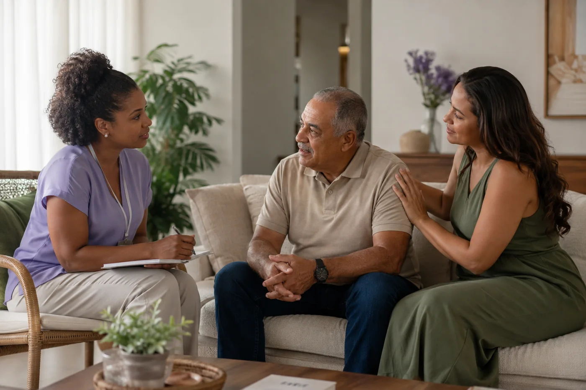

Equipe multidisciplinar
Enfermagem, fisioterapia, fonoaudiologia, nutrição e terapia ocupacional.
Ver especialidadesSobre a Harmonia Care
A Harmonia Care organiza cuidados de saúde e apoio à rotina no domicílio. Entendemos o contexto da família, definimos o perfil profissional e alinhamos horários, atividades e acompanhamento antes do início.

O que oferecemos
A família pode encontrar atendimento profissional de saúde, acompanhamento para a rotina e cuidado infantil.
Enfermagem, fisioterapia, fonoaudiologia, nutrição e terapia ocupacional.
Ver especialidadesApoio nas atividades diárias, companhia, segurança e organização da rotina domiciliar.
Entender o serviçoCuidado infantil no domicílio, conforme a necessidade da família e a disponibilidade da equipe.
Entender o serviçoComo funciona
A equipe orienta a contratação a partir das informações fornecidas pela família.
Informe o tipo de apoio procurado, a rotina e a cidade do atendimento.
A demanda é analisada para indicar a modalidade e o perfil profissional compatíveis.
Disponibilidade, horários, área atendida e demais detalhes são alinhados antes do início.
Nossos parceiros
Temos satisfação em caminhar ao lado de empresas que compartilham o compromisso com qualidade, inovação e bem-estar.

Clínica especializada em neuromodulação, fisioterapia neurofuncional, reabilitação vestibular e fonoaudiologia. Sua atuação complementa nossa rede com cuidado neurológico e saúde mental.
Conhecer o site
Empresa de produtos médico-hospitalares e recursos para reabilitação. A parceria aproxima pacientes e famílias de soluções que apoiam a continuidade do cuidado.
Conhecer o sitePrecisa de atendimento?
Informe sua cidade e o tipo de serviço procurado para receber uma orientação inicial.